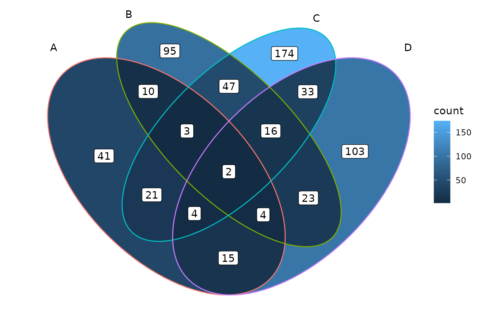
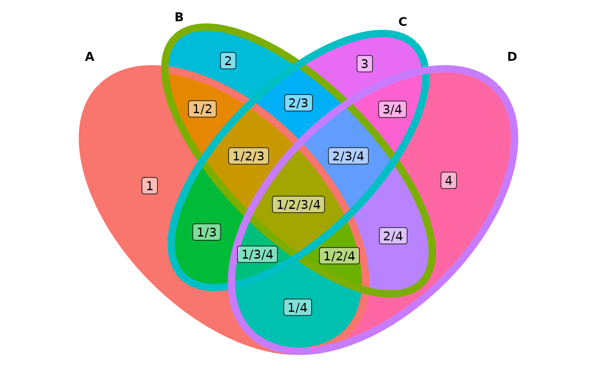

The main function ggVennDiagram() accepts a list input,
and output a ggplot object. By measuring the length of input list, it
automatically applies internal functions to build a plot in two steps:
data preparation and visualization.
Data preparation was packaged into one function
process_data(). Its output is a S4
VennPlotData class object, which contains three slots,
setEdge, setLabel and region.
These slot data then can be further plotted with ggplot
functions.
See below for a better understanding.
Generate example data.
genes <- paste0("gene",1:1000)
set.seed(20231214)
gene_list <- list(A = sample(genes,100),
B = sample(genes,200),
C = sample(genes,300),
D = sample(genes,200))Then we can reproduce the plot of ggVennDiagram() with
several lines.
venn <- Venn(gene_list)
data <- process_data(venn)
ggplot() +
# 1. region count layer
geom_polygon(aes(X, Y, fill = count, group = id),
data = venn_regionedge(data)) +
# 2. set edge layer
geom_path(aes(X, Y, color = id, group = id),
data = venn_setedge(data),
show.legend = FALSE) +
# 3. set label layer
geom_text(aes(X, Y, label = name),
data = venn_setlabel(data)) +
# 4. region label layer
geom_label(aes(X, Y, label = count),
data = venn_regionlabel(data)) +
coord_equal() +
theme_void()
#> Joining with `by = join_by(id)`
The variable data is a structured list that has three
slots.
data
#> Class VennPlotData - '401f'
#> Type: ellipse; No. sets: 4; No. regions: 15.
#> To view this shape, use `plot_shape_edge()`.
#> To view its components, use `venn_setedge()`, `venn_setlabel()`, etc.ggVennDiagram export functions to get these data, and
they can be used for comprehensive customization in user-side.
Venn(): Venn object constructor, use this to construct
a Venn object from list.process_data(): process data with a Venn objectvenn_regionedge(): get region edge data to plotvenn_regionlabel(): get region label position to
plotvenn_setedge(): get setedge data to plotvenn_setlabel(): get setlabel data to plotFor example, you may change edge/fill/label properties as you will.
ggplot() +
# change mapping of color filling
geom_polygon(aes(X, Y, fill = id, group = id),
data = venn_regionedge(data),
show.legend = FALSE) +
# adjust edge size and color
geom_path(aes(X, Y, color = id, group = id),
data = venn_setedge(data),
linewidth = 3,
show.legend = FALSE) +
# show set label in bold
geom_text(aes(X, Y, label = name),
fontface = "bold",
data = venn_setlabel(data)) +
# add a alternative region name
geom_label(aes(X, Y, label = id),
data = venn_regionlabel(data),
alpha = 0.5) +
coord_equal() +
theme_void()
#> Joining with `by = join_by(id)`